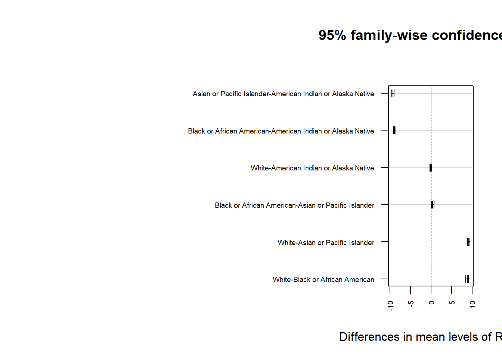

# Load libraries
library(dplyr)
Attaching package: 'dplyr'The following objects are masked from 'package:stats':
filter, lagThe following objects are masked from 'package:base':
intersect, setdiff, setequal, unionlibrary(tidyr)# Load libraries
library(dplyr)
Attaching package: 'dplyr'The following objects are masked from 'package:stats':
filter, lagThe following objects are masked from 'package:base':
intersect, setdiff, setequal, unionlibrary(tidyr)suicide_data <- read.csv("C:/Users/hanzi/Downloads/Death_rates_for_suicide__by_sex__race__Hispanic_origin__and_age__United_States.csv")
drug_overdose_data <- read.csv("C:/Users/hanzi/Downloads/Drug_overdose_death_rates__by_drug_type__sex__age__race__and_Hispanic_origin__United_States.csv")unique(suicide_data$STUB_LABEL) [1] "All persons"
[2] "Male"
[3] "Female"
[4] "Male: White"
[5] "Male: Black or African American"
[6] "Male: American Indian or Alaska Native"
[7] "Male: Asian or Pacific Islander"
[8] "Female: White"
[9] "Female: Black or African American"
[10] "Female: American Indian or Alaska Native"
[11] "Female: Asian or Pacific Islander"
[12] "Male: Not Hispanic or Latino: White"
[13] "Male: Not Hispanic or Latino: Black or African American"
[14] "Male: Hispanic or Latino: All races"
[15] "Male: Not Hispanic or Latino: American Indian or Alaska Native"
[16] "Male: Not Hispanic or Latino: Asian or Pacific Islander"
[17] "Female: Not Hispanic or Latino: White"
[18] "Female: Not Hispanic or Latino: Black or African American"
[19] "Female: Hispanic or Latino: All races"
[20] "Female: Not Hispanic or Latino: American Indian or Alaska Native"
[21] "Female: Not Hispanic or Latino: Asian or Pacific Islander"
[22] "Male: Not Hispanic or Latino: Asian"
[23] "Male: Not Hispanic or Latino: Native Hawaiian or Other Pacific Islander"
[24] "Female: Not Hispanic or Latino: Asian"
[25] "Female: Not Hispanic or Latino: Native Hawaiian or Other Pacific Islander"
[26] "10-14 years"
[27] "15-24 years"
[28] "15-19 years"
[29] "20-24 years"
[30] "25-44 years"
[31] "25-34 years"
[32] "35-44 years"
[33] "45-64 years"
[34] "45-54 years"
[35] "55-64 years"
[36] "65 years and over"
[37] "65-74 years"
[38] "75-84 years"
[39] "85 years and over"
[40] "Male: 10-14 years"
[41] "Male: 15-24 years"
[42] "Male: 15-19 years"
[43] "Male: 20-24 years"
[44] "Male: 25-44 years"
[45] "Male: 25-34 years"
[46] "Male: 35-44 years"
[47] "Male: 45-64 years"
[48] "Male: 45-54 years"
[49] "Male: 55-64 years"
[50] "Male: 65 years and over"
[51] "Male: 65-74 years"
[52] "Male: 75-84 years"
[53] "Male: 85 years and over"
[54] "Female: 10-14 years"
[55] "Female: 15-24 years"
[56] "Female: 15-19 years"
[57] "Female: 20-24 years"
[58] "Female: 25-44 years"
[59] "Female: 25-34 years"
[60] "Female: 35-44 years"
[61] "Female: 45-64 years"
[62] "Female: 45-54 years"
[63] "Female: 55-64 years"
[64] "Female: 65 years and over"
[65] "Female: 65-74 years"
[66] "Female: 75-84 years"
[67] "Female: 85 years and over"
[68] "Male: White: 15-24 years"
[69] "Male: White: 25-44 years"
[70] "Male: White: 45-64 years"
[71] "Male: White: 65 years and over"
[72] "Male: White: 65-74 years"
[73] "Male: White: 75-84 years"
[74] "Male: White: 85 years and over"
[75] "Male: Black or African American: 15-24 years"
[76] "Male: Black or African American: 25-44 years"
[77] "Male: Black or African American: 45-64 years"
[78] "Male: Black or African American: 65 years and over"
[79] "Male: Black or African American: 65-74 years"
[80] "Male: Black or African American: 75-84 years"
[81] "Male: Black or African American: 85 years and over"
[82] "Male: American Indian or Alaska Native: 15-24 years"
[83] "Male: American Indian or Alaska Native: 25-44 years"
[84] "Male: American Indian or Alaska Native: 45-64 years"
[85] "Male: American Indian or Alaska Native: 65 years and over"
[86] "Male: Asian or Pacific Islander: 15-24 years"
[87] "Male: Asian or Pacific Islander: 25-44 years"
[88] "Male: Asian or Pacific Islander: 45-64 years"
[89] "Male: Asian or Pacific Islander: 65 years and over"
[90] "Female: White: 15-24 years"
[91] "Female: White: 25-44 years"
[92] "Female: White: 45-64 years"
[93] "Female: White: 65 years and over"
[94] "Female: Black or African American: 15-24 years"
[95] "Female: Black or African American: 25-44 years"
[96] "Female: Black or African American: 45-64 years"
[97] "Female: Black or African American: 65 years and over"
[98] "Female: American Indian or Alaska Native: 15-24 years"
[99] "Female: American Indian or Alaska Native: 25-44 years"
[100] "Female: American Indian or Alaska Native: 45-64 years"
[101] "Female: American Indian or Alaska Native: 65 years and over"
[102] "Female: Asian or Pacific Islander: 15-24 years"
[103] "Female: Asian or Pacific Islander: 25-44 years"
[104] "Female: Asian or Pacific Islander: 45-64 years"
[105] "Female: Asian or Pacific Islander: 65 years and over"
[106] "Male: Not Hispanic or Latino: American Indian or Alaska Native: 15-24 years"
[107] "Male: Not Hispanic or Latino: White: 15-24 years"
[108] "Male: Not Hispanic or Latino: American Indian or Alaska Native: 25-44 years"
[109] "Male: Not Hispanic or Latino: American Indian or Alaska Native: 45-64 years"
[110] "Male: Not Hispanic or Latino: American Indian or Alaska Native: 65 years and over"
[111] "Male: Not Hispanic or Latino: Asian or Pacific Islander: 15-24 years"
[112] "Male: Not Hispanic or Latino: Asian or Pacific Islander: 25-44 years"
[113] "Male: Not Hispanic or Latino: Asian or Pacific Islander: 45-64 years"
[114] "Male: Not Hispanic or Latino: Asian or Pacific Islander: 65 years and over"
[115] "Female: Not Hispanic or Latino: American Indian or Alaska Native: 15-24 years"
[116] "Female: Not Hispanic or Latino: American Indian or Alaska Native: 25-44 years"
[117] "Female: Not Hispanic or Latino: American Indian or Alaska Native: 45-64 years"
[118] "Female: Not Hispanic or Latino: American Indian or Alaska Native: 65 years and over"
[119] "Female: Not Hispanic or Latino: Asian or Pacific Islander: 15-24 years"
[120] "Female: Not Hispanic or Latino: Asian or Pacific Islander: 25-44 years"
[121] "Female: Not Hispanic or Latino: Asian or Pacific Islander: 45-64 years"
[122] "Female: Not Hispanic or Latino: Asian or Pacific Islander: 65 years and over"
[123] "Male: Not Hispanic or Latino: White: 25-44 years"
[124] "Male: Not Hispanic or Latino: White: 45-64 years"
[125] "Male: Not Hispanic or Latino: White: 65 years and over"
[126] "Male: Not Hispanic or Latino: Black or African American: 15-24 years"
[127] "Male: Not Hispanic or Latino: Black or African American: 25-44 years"
[128] "Male: Not Hispanic or Latino: Black or African American: 45-64 years"
[129] "Male: Not Hispanic or Latino: Black or African American: 65 years and over"
[130] "Male: Hispanic or Latino: All races: 15-24 years"
[131] "Male: Hispanic or Latino: All races: 25-44 years"
[132] "Male: Hispanic or Latino: All races: 45-64 years"
[133] "Male: Hispanic or Latino: All races: 65 years and over"
[134] "Female: Not Hispanic or Latino: White: 15-24 years"
[135] "Female: Not Hispanic or Latino: White: 25-44 years"
[136] "Female: Not Hispanic or Latino: White: 45-64 years"
[137] "Female: Not Hispanic or Latino: White: 65 years and over"
[138] "Female: Not Hispanic or Latino: Black or African American: 15-24 years"
[139] "Female: Not Hispanic or Latino: Black or African American: 25-44 years"
[140] "Female: Not Hispanic or Latino: Black or African American: 45-64 years"
[141] "Female: Not Hispanic or Latino: Black or African American: 65 years and over"
[142] "Female: Hispanic or Latino: All races: 15-24 years"
[143] "Female: Hispanic or Latino: All races: 25-44 years"
[144] "Female: Hispanic or Latino: All races: 45-64 years"
[145] "Female: Hispanic or Latino: All races: 65 years and over"
[146] "Male: Not Hispanic or Latino: Asian: 15-24 years"
[147] "Male: Not Hispanic or Latino: Asian: 25-44 years"
[148] "Male: Not Hispanic or Latino: Asian: 45-64 years"
[149] "Male: Not Hispanic or Latino: Asian: 65 years and over"
[150] "Male: Not Hispanic or Latino: Native Hawaiian or Other Pacific Islander: 15-24 years"
[151] "Male: Not Hispanic or Latino: Native Hawaiian or Other Pacific Islander: 25-44 years"
[152] "Male: Not Hispanic or Latino: Native Hawaiian or Other Pacific Islander: 45-64 years"
[153] "Male: Not Hispanic or Latino: Native Hawaiian or Other Pacific Islander: 65 years and over"
[154] "Female: Not Hispanic or Latino: Asian: 15-24 years"
[155] "Female: Not Hispanic or Latino: Asian: 25-44 years"
[156] "Female: Not Hispanic or Latino: Asian: 45-64 years"
[157] "Female: Not Hispanic or Latino: Asian: 65 years and over"
[158] "Female: Not Hispanic or Latino: Native Hawaiian or Other Pacific Islander: 15-24 years"
[159] "Female: Not Hispanic or Latino: Native Hawaiian or Other Pacific Islander: 25-44 years"
[160] "Female: Not Hispanic or Latino: Native Hawaiian or Other Pacific Islander: 45-64 years"
[161] "Female: Not Hispanic or Latino: Native Hawaiian or Other Pacific Islander: 65 years and over"unique(suicide_data$STUB_NAME) [1] "Total"
[2] "Sex"
[3] "Sex and race"
[4] "Sex and race and Hispanic origin"
[5] "Sex and race (Single race)"
[6] "Sex and race and Hispanic origin (Single race)"
[7] "Age"
[8] "Sex and age"
[9] "Sex, age and race"
[10] "Sex, age and race and Hispanic origin"
[11] "Sex, age and race (Single race)"
[12] "Sex, age and race and Hispanic origin (Single race)"unique(suicide_data$AGE) [1] "All ages" "10-14 years" "15-24 years"
[4] "15-19 years" "20-24 years" "25-44 years"
[7] "25-34 years" "35-44 years" "45-64 years"
[10] "45-54 years" "55-64 years" "65 years and over"
[13] "65-74 years" "75-84 years" "85 years and over"unique(drug_overdose_data$STUB_LABEL) [1] "All persons"
[2] "Male"
[3] "Female"
[4] "Male: White"
[5] "Male: Black or African American"
[6] "Male: American Indian or Alaska Native"
[7] "Male: Asian or Pacific Islander"
[8] "Female: White"
[9] "Female: Black or African American"
[10] "Female: American Indian or Alaska Native"
[11] "Female: Asian or Pacific Islander"
[12] "Male: Hispanic or Latino: All races"
[13] "Male: Not Hispanic or Latino: White"
[14] "Male: Not Hispanic or Latino: Black"
[15] "Male: Not Hispanic or Latino: American Indian or Alaska Native"
[16] "Male: Not Hispanic or Latino: Asian or Pacific Islander"
[17] "Female: Hispanic or Latino: All races"
[18] "Female: Not Hispanic or Latino: White"
[19] "Female: Not Hispanic or Latino: Black"
[20] "Female: Not Hispanic or Latino: American Indian or Alaska Native"
[21] "Female: Not Hispanic or Latino: Asian or Pacific Islander"
[22] "Under 15 years"
[23] "15-24 years"
[24] "25-34 years"
[25] "35-44 years"
[26] "45-54 years"
[27] "55-64 years"
[28] "65-74 years"
[29] "75-84 years"
[30] "85 years and over"
[31] "Male: Under 15 years"
[32] "Male: 15-24 years"
[33] "Male: 25-34 years"
[34] "Male: 35-44 years"
[35] "Male: 45-54 years"
[36] "Male: 55-64 years"
[37] "Male: 65-74 years"
[38] "Male: 75-84 years"
[39] "Male: 85 years and over"
[40] "Female: Under 15 years"
[41] "Female: 15-24 years"
[42] "Female: 25-34 years"
[43] "Female: 35-44 years"
[44] "Female: 45-54 years"
[45] "Female: 55-64 years"
[46] "Female: 65-74 years"
[47] "Female: 75-84 years"
[48] "Female: 85 years and over"
[49] "Male: Not Hispanic or Latino: Asian"
[50] "Male: Not Hispanic or Latino: Native Hawaiian or Other Pacific Islander"
[51] "Female: Not Hispanic or Latino: Asian"
[52] "Female: Not Hispanic or Latino: Native Hawaiian or Other Pacific Islander"unique(drug_overdose_data$STUB_NAME)[1] "Total"
[2] "Sex"
[3] "Sex and race"
[4] "Sex and race and Hispanic origin"
[5] "Age"
[6] "Sex and age"
[7] "Sex and race (single race)"
[8] "Sex and race and Hispanic origin (single race)"unique(drug_overdose_data$AGE) [1] "All ages" "Under 15 years" "15-24 years"
[4] "25-34 years" "35-44 years" "45-54 years"
[7] "55-64 years" "65-74 years" "75-84 years"
[10] "85 years and over"# Clean the suicide dataset
suicide_clean <- suicide_data %>%
mutate(
Gender = case_when(
grepl("Male", STUB_LABEL) ~ "Male",
grepl("Female", STUB_LABEL) ~ "Female",
TRUE ~ "All persons"
),
Race = case_when(
grepl("White", STUB_LABEL) ~ "White",
grepl("Black or African American", STUB_LABEL) ~ "Black or African American",
grepl("Asian or Pacific Islander", STUB_LABEL) ~ "Asian or Pacific Islander",
grepl("American Indian or Alaska Native", STUB_LABEL) ~ "American Indian or Alaska Native",
TRUE ~ "Unknown"
)
) %>%
select(
Gender,
Race,
Year = YEAR,
Age_Group = AGE,
Suicide_Rate = ESTIMATE
) %>%
filter(Gender != "All persons") # Exclude general rows if needed
# Clean the drug overdose dataset
drug_overdose_clean <- drug_overdose_data %>%
mutate(
Gender = case_when(
grepl("Male", STUB_LABEL) ~ "Male",
grepl("Female", STUB_LABEL) ~ "Female",
TRUE ~ "All persons"
),
Race = case_when(
grepl("White", STUB_LABEL) ~ "White",
grepl("Black or African American", STUB_LABEL) ~ "Black or African American",
grepl("Asian or Pacific Islander", STUB_LABEL) ~ "Asian or Pacific Islander",
grepl("American Indian or Alaska Native", STUB_LABEL) ~ "American Indian or Alaska Native",
TRUE ~ "Unknown"
)
) %>%
select(
Gender,
Race,
Year = YEAR,
Age_Group = AGE,
Overdose_Rate = ESTIMATE
) %>%
filter(Gender != "All persons") # Exclude general rows if needed# Check for missing data
sum(is.na(suicide_clean))[1] 906sum(is.na(drug_overdose_clean))[1] 924# Remove rows with missing data
suicide_clean <- suicide_clean %>% drop_na()
drug_overdose_clean <- drug_overdose_clean %>% drop_na()# Merge the two datasets
merged_data <- merge(
suicide_clean,
drug_overdose_clean,
by = c("Gender", "Race", "Year", "Age_Group"),
all = FALSE
)
merged_data <- merged_data %>%
filter(Race != "Unknown") %>% # Remove rows with unknown race
select(-Age_Group, -Year) # Drop the Age_Group and Year columns entirelywrite.csv(merged_data, "Cleaned_Combined_Death_Rates.csv", row.names = FALSE)summary(merged_data) Gender Race Suicide_Rate Overdose_Rate
Length:5840 Length:5840 Min. : 1.40 Min. : 0.100
Class :character Class :character 1st Qu.: 5.30 1st Qu.: 1.100
Mode :character Mode :character Median : 8.80 Median : 2.600
Mean :11.98 Mean : 5.164
3rd Qu.:20.00 3rd Qu.: 6.900
Max. :34.80 Max. :35.800 # Check unique values
table(merged_data$Gender)
Female Male
2836 3004 table(merged_data$Race)
American Indian or Alaska Native Asian or Pacific Islander
1588 952
Black or African American White
1092 2208 table(merged_data$Year)< table of extent 0 >table(merged_data$Age_Group)< table of extent 0 >write.csv(
merged_data,
"C:/Users/hanzi/Downloads/Cleaned_Combined_Death_Rates.csv",
row.names = FALSE
)
print("The cleaned and further filtered dataset has been saved successfully!")[1] "The cleaned and further filtered dataset has been saved successfully!"
`summarise()` has grouped output by 'Race'. You can override using the
`.groups` argument.| Race | Gender | Average Suicide Rate | Average Overdose Rate |
|---|---|---|---|
| American Indian or Alaska Native | Female | 6.971875 | 5.7458333 |
| American Indian or Alaska Native | Male | 22.847561 | 7.9946341 |
| Asian or Pacific Islander | Female | 3.549755 | 0.7960784 |
| Asian or Pacific Islander | Male | 8.978125 | 1.3919118 |
| Black or African American | Female | 2.272122 | 2.5464029 |
| Black or African American | Male | 9.893097 | 5.8938433 |
| White | Female | 6.250000 | 4.2420290 |
| White | Male | 23.593478 | 8.0163043 |
# Step 1: Load the dataset
data <- read.csv("Cleaned_Combined_Death_Rates.csv")
# Step 2: Clean the data
# Select relevant columns and remove rows with missing values
cleaned_data <- data %>%
select(Gender, Race, Suicide_Rate) %>%
na.omit()
# Step 3: Perform Two-Way ANOVA
# Test for differences in suicide rates between gender and racial groups
anova_model <- aov(Suicide_Rate ~ Gender * Race, data = cleaned_data)
# Step 4: Display ANOVA summary
print("Summary of Two-Way ANOVA:")[1] "Summary of Two-Way ANOVA:"summary(anova_model) Df Sum Sq Mean Sq F value Pr(>F)
Gender 1 247350 247350 28716 <2e-16 ***
Race 3 107644 35881 4166 <2e-16 ***
Gender:Race 3 34892 11631 1350 <2e-16 ***
Residuals 5832 50234 9
---
Signif. codes: 0 '***' 0.001 '**' 0.01 '*' 0.05 '.' 0.1 ' ' 1# Step 5: Perform Post-hoc Tukey HSD test
tukey_results <- TukeyHSD(anova_model)
print("Tukey HSD Test Results:")[1] "Tukey HSD Test Results:"print(tukey_results) Tukey multiple comparisons of means
95% family-wise confidence level
Fit: aov(formula = Suicide_Rate ~ Gender * Race, data = cleaned_data)
$Gender
diff lwr upr p adj
Male-Female 13.02145 12.87081 13.17209 0
$Race
diff
Asian or Pacific Islander-American Indian or Alaska Native -9.23487276
Black or African American-American Indian or Alaska Native -8.82438523
White-American Indian or Alaska Native -0.03471067
Black or African American-Asian or Pacific Islander 0.41048754
White-Asian or Pacific Islander 9.20016210
White-Black or African American 8.78967456
lwr
Asian or Pacific Islander-American Indian or Alaska Native -9.54401533
Black or African American-American Indian or Alaska Native -9.12087964
White-American Indian or Alaska Native -0.28286622
Black or African American-Asian or Pacific Islander 0.07606439
White-Asian or Pacific Islander 8.90773931
White-Black or African American 8.51065683
upr p adj
Asian or Pacific Islander-American Indian or Alaska Native -8.9257302 0.0000000
Black or African American-American Indian or Alaska Native -8.5278908 0.0000000
White-American Indian or Alaska Native 0.2134449 0.9841029
Black or African American-Asian or Pacific Islander 0.7449107 0.0087828
White-Asian or Pacific Islander 9.4925849 0.0000000
White-Black or African American 9.0686923 0.0000000
$`Gender:Race`
diff
Male:American Indian or Alaska Native-Female:American Indian or Alaska Native 15.8756860
Female:Asian or Pacific Islander-Female:American Indian or Alaska Native -3.4221201
Male:Asian or Pacific Islander-Female:American Indian or Alaska Native 2.0062500
Female:Black or African American-Female:American Indian or Alaska Native -4.6997527
Male:Black or African American-Female:American Indian or Alaska Native 2.9212220
Female:White-Female:American Indian or Alaska Native -0.7218750
Male:White-Female:American Indian or Alaska Native 16.6216033
Female:Asian or Pacific Islander-Male:American Indian or Alaska Native -19.2978061
Male:Asian or Pacific Islander-Male:American Indian or Alaska Native -13.8694360
Female:Black or African American-Male:American Indian or Alaska Native -20.5754387
Male:Black or African American-Male:American Indian or Alaska Native -12.9544640
Female:White-Male:American Indian or Alaska Native -16.5975610
Male:White-Male:American Indian or Alaska Native 0.7459173
Male:Asian or Pacific Islander-Female:Asian or Pacific Islander 5.4283701
Female:Black or African American-Female:Asian or Pacific Islander -1.2776326
Male:Black or African American-Female:Asian or Pacific Islander 6.3433421
Female:White-Female:Asian or Pacific Islander 2.7002451
Male:White-Female:Asian or Pacific Islander 20.0437234
Female:Black or African American-Male:Asian or Pacific Islander -6.7060027
Male:Black or African American-Male:Asian or Pacific Islander 0.9149720
Female:White-Male:Asian or Pacific Islander -2.7281250
Male:White-Male:Asian or Pacific Islander 14.6153533
Male:Black or African American-Female:Black or African American 7.6209747
Female:White-Female:Black or African American 3.9778777
Male:White-Female:Black or African American 21.3213560
Female:White-Male:Black or African American -3.6430970
Male:White-Male:Black or African American 13.7003812
Male:White-Female:White 17.3434783
lwr
Male:American Indian or Alaska Native-Female:American Indian or Alaska Native 15.4288422
Female:Asian or Pacific Islander-Female:American Indian or Alaska Native -3.9672638
Male:Asian or Pacific Islander-Female:American Indian or Alaska Native 1.5075896
Female:Black or African American-Female:American Indian or Alaska Native -5.1952531
Male:Black or African American-Female:American Indian or Alaska Native 2.4203880
Female:White-Female:American Indian or Alaska Native -1.1399997
Male:White-Female:American Indian or Alaska Native 16.2034786
Female:Asian or Pacific Islander-Male:American Indian or Alaska Native -19.8369196
Male:Asian or Pacific Islander-Male:American Indian or Alaska Native -14.3614969
Female:Black or African American-Male:American Indian or Alaska Native -21.0642969
Male:Black or African American-Male:American Indian or Alaska Native -13.4487275
Female:White-Male:American Indian or Alaska Native -17.0077926
Male:White-Male:American Indian or Alaska Native 0.3356857
Male:Asian or Pacific Islander-Female:Asian or Pacific Islander 4.8455870
Female:Black or African American-Female:Asian or Pacific Islander -1.8577142
Male:Black or African American-Female:Asian or Pacific Islander 5.7586980
Female:White-Female:Asian or Pacific Islander 2.1846850
Male:White-Female:Asian or Pacific Islander 19.5281632
Female:Black or African American-Male:Asian or Pacific Islander -7.2426359
Male:Black or African American-Male:Asian or Pacific Islander 0.3734102
Female:White-Male:Asian or Pacific Islander -3.1942610
Male:White-Male:Asian or Pacific Islander 14.1492172
Male:Black or African American-Female:Black or African American 7.0823211
Female:White-Female:Black or African American 3.5151237
Male:White-Female:Black or African American 20.8586020
Female:White-Male:Black or African American -4.1115576
Male:White-Male:Black or African American 13.2319207
Male:White-Female:White 16.9647319
upr
Male:American Indian or Alaska Native-Female:American Indian or Alaska Native 16.3225298
Female:Asian or Pacific Islander-Female:American Indian or Alaska Native -2.8769764
Male:Asian or Pacific Islander-Female:American Indian or Alaska Native 2.5049104
Female:Black or African American-Female:American Indian or Alaska Native -4.2042523
Male:Black or African American-Female:American Indian or Alaska Native 3.4220560
Female:White-Female:American Indian or Alaska Native -0.3037503
Male:White-Female:American Indian or Alaska Native 17.0397280
Female:Asian or Pacific Islander-Male:American Indian or Alaska Native -18.7586926
Male:Asian or Pacific Islander-Male:American Indian or Alaska Native -13.3773751
Female:Black or African American-Male:American Indian or Alaska Native -20.0865804
Male:Black or African American-Male:American Indian or Alaska Native -12.4602004
Female:White-Male:American Indian or Alaska Native -16.1873294
Male:White-Male:American Indian or Alaska Native 1.1561489
Male:Asian or Pacific Islander-Female:Asian or Pacific Islander 6.0111532
Female:Black or African American-Female:Asian or Pacific Islander -0.6975510
Male:Black or African American-Female:Asian or Pacific Islander 6.9279862
Female:White-Female:Asian or Pacific Islander 3.2158052
Male:White-Female:Asian or Pacific Islander 20.5592835
Female:Black or African American-Male:Asian or Pacific Islander -6.1693695
Male:Black or African American-Male:Asian or Pacific Islander 1.4565339
Female:White-Male:Asian or Pacific Islander -2.2619890
Male:White-Male:Asian or Pacific Islander 15.0814893
Male:Black or African American-Female:Black or African American 8.1596283
Female:White-Female:Black or African American 4.4406317
Male:White-Female:Black or African American 21.7841099
Female:White-Male:Black or African American -3.1746365
Male:White-Male:Black or African American 14.1688418
Male:White-Female:White 17.7222246
p adj
Male:American Indian or Alaska Native-Female:American Indian or Alaska Native 0.0e+00
Female:Asian or Pacific Islander-Female:American Indian or Alaska Native 0.0e+00
Male:Asian or Pacific Islander-Female:American Indian or Alaska Native 0.0e+00
Female:Black or African American-Female:American Indian or Alaska Native 0.0e+00
Male:Black or African American-Female:American Indian or Alaska Native 0.0e+00
Female:White-Female:American Indian or Alaska Native 4.7e-06
Male:White-Female:American Indian or Alaska Native 0.0e+00
Female:Asian or Pacific Islander-Male:American Indian or Alaska Native 0.0e+00
Male:Asian or Pacific Islander-Male:American Indian or Alaska Native 0.0e+00
Female:Black or African American-Male:American Indian or Alaska Native 0.0e+00
Male:Black or African American-Male:American Indian or Alaska Native 0.0e+00
Female:White-Male:American Indian or Alaska Native 0.0e+00
Male:White-Male:American Indian or Alaska Native 1.0e-06
Male:Asian or Pacific Islander-Female:Asian or Pacific Islander 0.0e+00
Female:Black or African American-Female:Asian or Pacific Islander 0.0e+00
Male:Black or African American-Female:Asian or Pacific Islander 0.0e+00
Female:White-Female:Asian or Pacific Islander 0.0e+00
Male:White-Female:Asian or Pacific Islander 0.0e+00
Female:Black or African American-Male:Asian or Pacific Islander 0.0e+00
Male:Black or African American-Male:Asian or Pacific Islander 8.6e-06
Female:White-Male:Asian or Pacific Islander 0.0e+00
Male:White-Male:Asian or Pacific Islander 0.0e+00
Male:Black or African American-Female:Black or African American 0.0e+00
Female:White-Female:Black or African American 0.0e+00
Male:White-Female:Black or African American 0.0e+00
Female:White-Male:Black or African American 0.0e+00
Male:White-Male:Black or African American 0.0e+00
Male:White-Female:White 0.0e+00par(mar = c(5, 25, 4, 2)) # Bottom, Left, Top, Right margins (25 for more space on the left)
par(cex.axis = 0.6) # Reduce axis text size further
par(las = 2) # Rotate axis labels for better readability
# Plot Tukey HSD results
plot(tukey_results)
# Load libraries
library(dplyr)
library(tidyr)
suicide_data <- read.csv("C:/Users/hanzi/Downloads/Death_rates_for_suicide__by_sex__race__Hispanic_origin__and_age__United_States.csv")
drug_overdose_data <- read.csv("C:/Users/hanzi/Downloads/Drug_overdose_death_rates__by_drug_type__sex__age__race__and_Hispanic_origin__United_States.csv")
unique(suicide_data$STUB_LABEL)
unique(suicide_data$STUB_NAME)
unique(suicide_data$AGE)
unique(drug_overdose_data$STUB_LABEL)
unique(drug_overdose_data$STUB_NAME)
unique(drug_overdose_data$AGE)
# Clean the suicide dataset
suicide_clean <- suicide_data %>%
mutate(
Gender = case_when(
grepl("Male", STUB_LABEL) ~ "Male",
grepl("Female", STUB_LABEL) ~ "Female",
TRUE ~ "All persons"
),
Race = case_when(
grepl("White", STUB_LABEL) ~ "White",
grepl("Black or African American", STUB_LABEL) ~ "Black or African American",
grepl("Asian or Pacific Islander", STUB_LABEL) ~ "Asian or Pacific Islander",
grepl("American Indian or Alaska Native", STUB_LABEL) ~ "American Indian or Alaska Native",
TRUE ~ "Unknown"
)
) %>%
select(
Gender,
Race,
Year = YEAR,
Age_Group = AGE,
Suicide_Rate = ESTIMATE
) %>%
filter(Gender != "All persons") # Exclude general rows if needed
# Clean the drug overdose dataset
drug_overdose_clean <- drug_overdose_data %>%
mutate(
Gender = case_when(
grepl("Male", STUB_LABEL) ~ "Male",
grepl("Female", STUB_LABEL) ~ "Female",
TRUE ~ "All persons"
),
Race = case_when(
grepl("White", STUB_LABEL) ~ "White",
grepl("Black or African American", STUB_LABEL) ~ "Black or African American",
grepl("Asian or Pacific Islander", STUB_LABEL) ~ "Asian or Pacific Islander",
grepl("American Indian or Alaska Native", STUB_LABEL) ~ "American Indian or Alaska Native",
TRUE ~ "Unknown"
)
) %>%
select(
Gender,
Race,
Year = YEAR,
Age_Group = AGE,
Overdose_Rate = ESTIMATE
) %>%
filter(Gender != "All persons") # Exclude general rows if needed
# Check for missing data
sum(is.na(suicide_clean))
sum(is.na(drug_overdose_clean))
# Remove rows with missing data
suicide_clean <- suicide_clean %>% drop_na()
drug_overdose_clean <- drug_overdose_clean %>% drop_na()
# Merge the two datasets
merged_data <- merge(
suicide_clean,
drug_overdose_clean,
by = c("Gender", "Race", "Year", "Age_Group"),
all = FALSE
)
merged_data <- merged_data %>%
filter(Race != "Unknown") %>% # Remove rows with unknown race
select(-Age_Group, -Year) # Drop the Age_Group and Year columns entirely
write.csv(merged_data, "Cleaned_Combined_Death_Rates.csv", row.names = FALSE)
summary(merged_data)
# Check unique values
table(merged_data$Gender)
table(merged_data$Race)
table(merged_data$Year)
table(merged_data$Age_Group)
write.csv(
merged_data,
"C:/Users/hanzi/Downloads/Cleaned_Combined_Death_Rates.csv",
row.names = FALSE
)
print("The cleaned and further filtered dataset has been saved successfully!")
## Image 1 for Question 1
library(ggplot2)
# Bar chart: Death rates by gender and race
ggplot(data = merged_data, aes(x = Race, y = Suicide_Rate, fill = Gender)) +
geom_bar(stat = "identity", position = "dodge") +
theme_minimal() +
theme(
axis.text.x = element_text(angle = 45, hjust = 1, size = 10),
axis.title.x = element_text(size = 12, face = "bold"),
axis.title.y = element_text(size = 12, face = "bold")
) +
labs(
title = "Suicide Rates by Race and Gender",
x = "Race",
y = "Suicide Rate",
fill = "Gender"
)
## Image 2 for Question 1
# Load required library
library(tidyr)
# Transform data to long format
merged_data_long <- merged_data %>%
pivot_longer(cols = c(Suicide_Rate, Overdose_Rate),
names_to = "Variable",
values_to = "Rate")
# Heatmap: Combined rates by race and gender
library(ggplot2)
ggplot(data = merged_data_long, aes(x = Race, y = Gender, fill = Rate)) +
geom_tile(color = "white") +
facet_wrap(~ Variable, scales = "free", ncol = 2) + # Adjust facets
scale_fill_gradient(low = "lightblue", high = "darkblue", name = "Rate") +
theme_minimal() +
theme(
axis.text.x = element_text(angle = 45, hjust = 1, size = 10), # Rotate and space x-axis labels
axis.title.x = element_text(size = 12, face = "bold"),
axis.title.y = element_text(size = 12, face = "bold"),
strip.text = element_text(size = 12, face = "bold") # For facet titles
) +
labs(
title = "Heatmap of Suicide and Overdose Rates by Race and Gender",
x = "Race",
y = "Gender"
)
## Image 3 for Question 1
# Summarize the data by Race and Gender
summary_table <- merged_data %>%
group_by(Race, Gender) %>%
summarise(
Avg_Suicide_Rate = mean(Suicide_Rate, na.rm = TRUE),
Avg_Overdose_Rate = mean(Overdose_Rate, na.rm = TRUE)
)
# Display the summary table
library(knitr)
kable(summary_table,
col.names = c("Race", "Gender", "Average Suicide Rate", "Average Overdose Rate"),
caption = "Summary Table of Average Suicide and Overdose Rates by Race and Gender")
# Step 1: Load the dataset
data <- read.csv("Cleaned_Combined_Death_Rates.csv")
# Step 2: Clean the data
# Select relevant columns and remove rows with missing values
cleaned_data <- data %>%
select(Gender, Race, Suicide_Rate) %>%
na.omit()
# Step 3: Perform Two-Way ANOVA
# Test for differences in suicide rates between gender and racial groups
anova_model <- aov(Suicide_Rate ~ Gender * Race, data = cleaned_data)
# Step 4: Display ANOVA summary
print("Summary of Two-Way ANOVA:")
summary(anova_model)
# Step 5: Perform Post-hoc Tukey HSD test
tukey_results <- TukeyHSD(anova_model)
print("Tukey HSD Test Results:")
print(tukey_results)
par(mar = c(5, 25, 4, 2)) # Bottom, Left, Top, Right margins (25 for more space on the left)
par(cex.axis = 0.6) # Reduce axis text size further
par(las = 2) # Rotate axis labels for better readability
# Plot Tukey HSD results
plot(tukey_results)